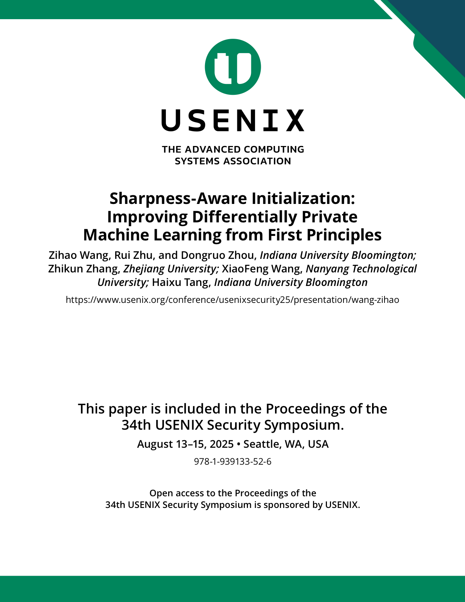

Sharpness-Aware Initialization: Improving Differentially Private Machine Learning from First Principles
USENIX Security 2025

Abstract
Differentially private machine learning often suffers from unstable optimization and poor utility when standard initialization interacts with gradient clipping and noise injection. We propose Sharpness-Aware Initialization, a principled initialization strategy that controls local loss sharpness before private training starts. By reducing sensitivity to noisy gradient updates, the method improves optimization stability and final model accuracy under the same privacy budget. Across multiple benchmarks, Sharpness-Aware Initialization consistently outperforms strong baselines and provides a simple, general way to improve private learning from first principles.
Resources
Citation
@inproceedings{WZZZWT25,
author = {Zihao Wang and Rui Zhu and Dongruo Zhou and Zhikun Zhang and Xiaofeng Wang and Haixu Tang},
title = {{Sharpness-Aware Initialization: Improving Differentially Private Machine Learning from First Principles}},
booktitle = {{USENIX Security}},
publisher = {USENIX Association},
year = {2025},
}